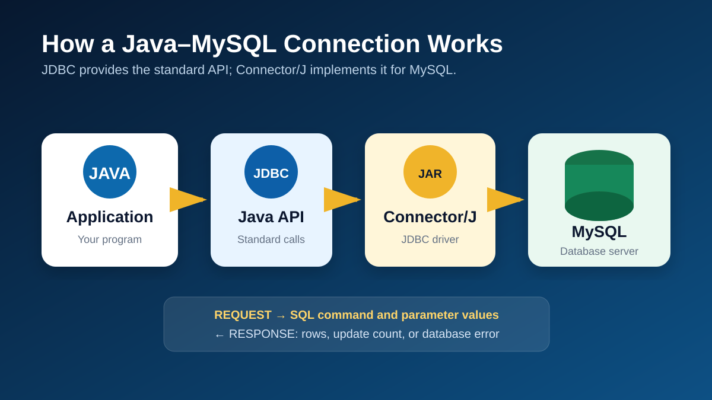
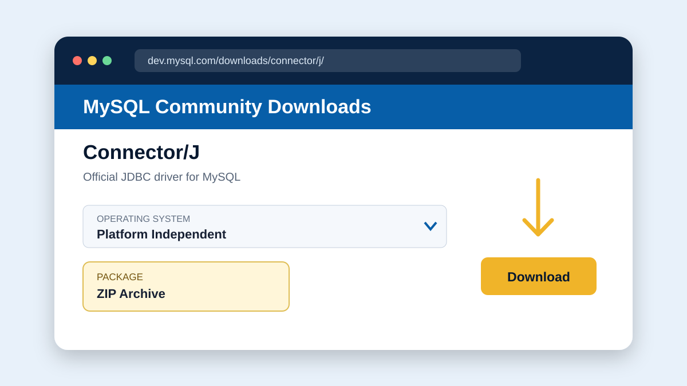
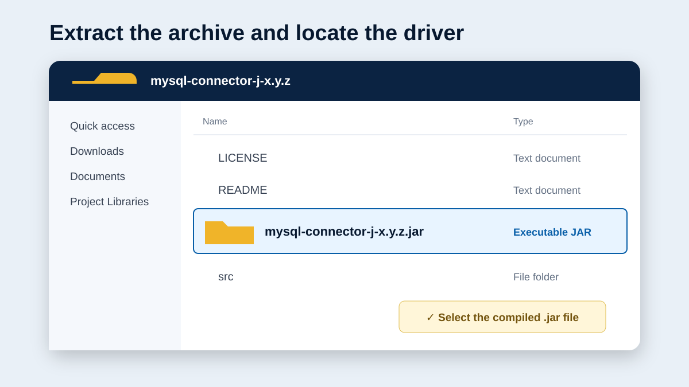
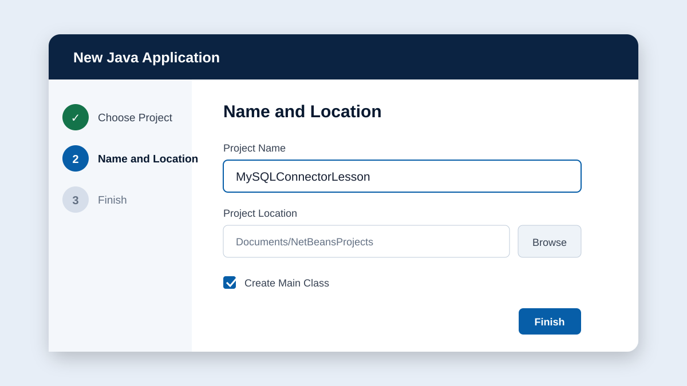
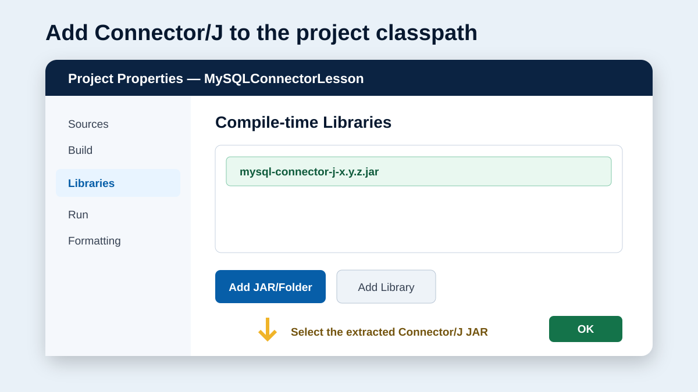
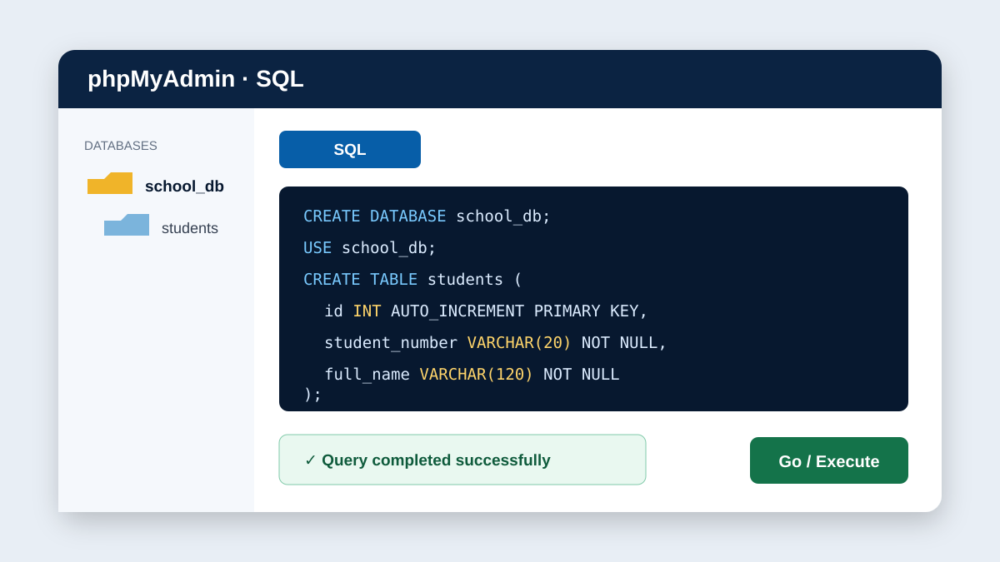
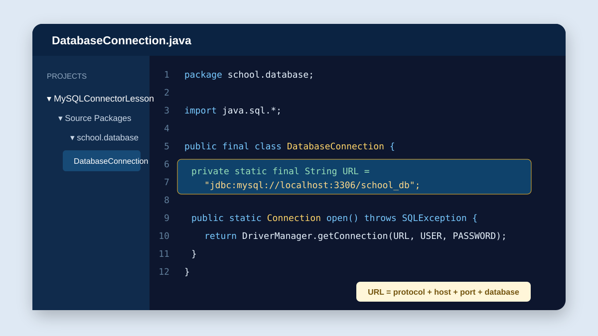
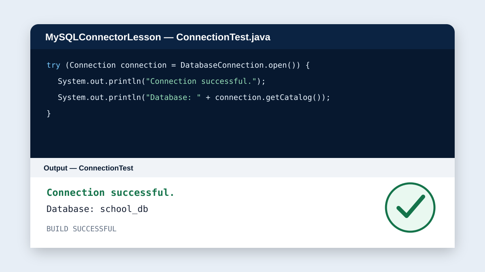
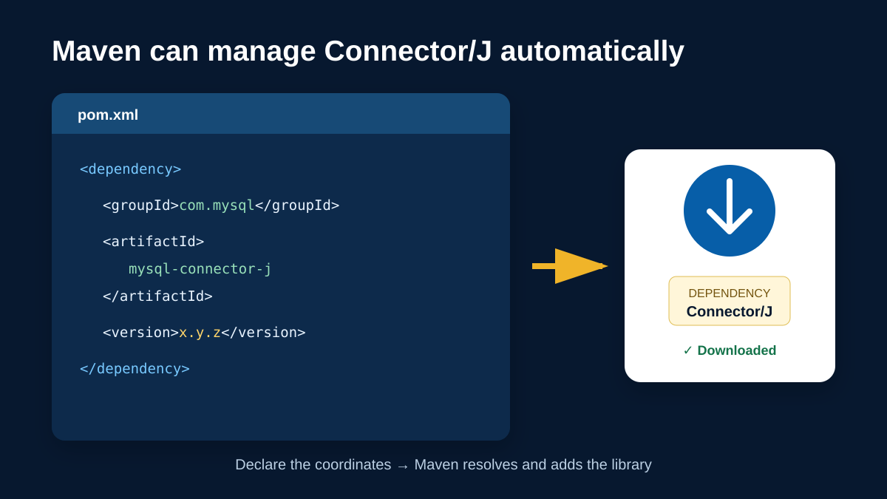
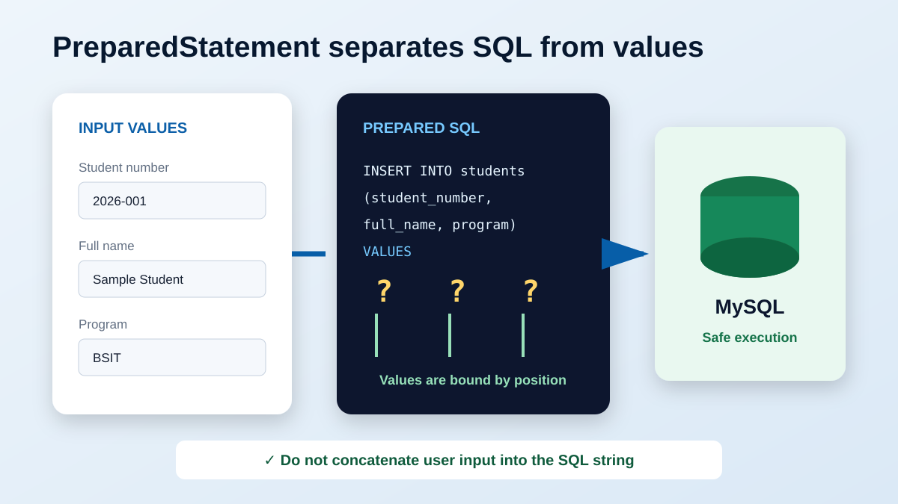

JDBC
Java Database Connectivity is the standard Java API for opening connections, executing SQL, and processing database results.
Lesson 2 · Database and JDBC
A guided lesson on connecting a Java application to a MySQL database through JDBC using Apache NetBeans.
Introduction
MySQL Connector/J is the official JDBC driver for MySQL. It allows a Java program to send SQL commands to a MySQL server and receive the results in a form that Java can process.
Without the connector, the Java application and the database cannot communicate using JDBC. The connector acts as a translator between Java's standard database interfaces and the MySQL network protocol.
This module uses a local MySQL or MariaDB server, Java, JDBC, and Apache NetBeans. The same JDBC principles also apply to other Java IDEs.
Expected Outcomes
At the end of this lesson, the learner should be able to:
PreparedStatement;Foundation
Java Database Connectivity is the standard Java API for opening connections, executing SQL, and processing database results.
The MySQL JDBC driver packaged as a Java archive. It implements JDBC for communication with MySQL.
An address such as jdbc:mysql://localhost:3306/school_db that identifies the server, port, and database.
The locations where Java searches for compiled classes and libraries required by the application.
An active session between the Java application and the database server.
A parameterized SQL statement that improves clarity and helps prevent SQL injection.
Preparation
main methodCREATE, INSERT, and SELECTStart the MySQL service and confirm that the practice database can be opened. Do not use a production database or real personal information for classroom exercises.
System Flow
The application does not communicate with MySQL directly. Java code uses JDBC interfaces, Connector/J translates those calls, and the database server executes the SQL.

Guided Demonstration
Complete each step in order. Read the checkpoint before proceeding to the next step.
Official Package

Library File
mysql-connector-j-x.y.z.jar.
.jar file, not a source or documentation file..jar and begins with mysql-connector-j.Project Setup
MySQLConnectorLesson and complete the wizard.school.database.
Classpath Configuration

Database Preparation
Open phpMyAdmin or the MySQL command line and execute the following SQL. The example uses fictional classroom data only.
CREATE DATABASE IF NOT EXISTS school_db
CHARACTER SET utf8mb4
COLLATE utf8mb4_unicode_ci;
USE school_db;
CREATE TABLE IF NOT EXISTS students (
id INT UNSIGNED AUTO_INCREMENT PRIMARY KEY,
student_number VARCHAR(20) NOT NULL UNIQUE,
full_name VARCHAR(120) NOT NULL,
program VARCHAR(80) NOT NULL,
created_at TIMESTAMP DEFAULT CURRENT_TIMESTAMP
);
school_db database contains a students table with five columns.Reusable Configuration
Create DatabaseConnection.java inside the school.database package. Update the username and password to match the classroom server.
package school.database;
import java.sql.Connection;
import java.sql.DriverManager;
import java.sql.SQLException;
public final class DatabaseConnection {
private static final String URL =
"jdbc:mysql://localhost:3306/school_db"
+ "?useSSL=false&serverTimezone=UTC";
private static final String USER = "root";
private static final String PASSWORD = "";
private DatabaseConnection() {
// Prevent this utility class from being instantiated.
}
public static Connection open() throws SQLException {
return DriverManager.getConnection(URL, USER, PASSWORD);
}
}
Hard-coded credentials are acceptable only for a controlled beginner exercise. In a real application, load secrets from protected configuration or environment variables and use a database account with only the permissions it needs.
Connection Test
Create ConnectionTest.java in the same package.
package school.database;
import java.sql.Connection;
import java.sql.SQLException;
public class ConnectionTest {
public static void main(String[] args) {
try (Connection connection = DatabaseConnection.open()) {
System.out.println("Connection successful.");
System.out.println("Database: "
+ connection.getCatalog());
} catch (SQLException exception) {
System.err.println("Connection failed.");
System.err.println("SQLState: "
+ exception.getSQLState());
System.err.println("Message: "
+ exception.getMessage());
}
}
}ConnectionTest.java and select Run File.
Connection successful. followed by Database: school_db.Alternative Setup
For a Maven project, add the official coordinates below to pom.xml. Replace x.y.z with a compatible current version selected by the teacher or project team.
<dependency>
<groupId>com.mysql</groupId>
<artifactId>mysql-connector-j</artifactId>
<version>x.y.z</version>
</dependency>
Use either the manual JAR method or Maven dependency management for the same project. Maven is normally preferred for projects already configured to use Maven.
Application Development
A successful connection is only the beginning. Applications should use parameterized statements when inserting, searching, updating, or deleting values supplied by a user.
String sql = "INSERT INTO students "
+ "(student_number, full_name, program) "
+ "VALUES (?, ?, ?)";
try (Connection connection = DatabaseConnection.open();
PreparedStatement statement =
connection.prepareStatement(sql)) {
statement.setString(1, "2026-001");
statement.setString(2, "Sample Student");
statement.setString(3, "BS Information Technology");
int rowsAdded = statement.executeUpdate();
System.out.println("Rows added: " + rowsAdded);
} catch (SQLException exception) {
System.err.println("Insert failed: "
+ exception.getMessage());
}
Problem Solving
| Error or Symptom | Likely Cause | Recommended Check |
|---|---|---|
No suitable driver | Connector/J is not on the runtime classpath or the URL is invalid. | Confirm that the JAR or Maven dependency is present and the URL begins with jdbc:mysql:. |
ClassNotFoundException | The driver class cannot be loaded. | Re-add the connector, clean the project, and rebuild it. The modern driver class is com.mysql.cj.jdbc.Driver. |
Communications link failure | MySQL is stopped, the port is wrong, or the host is unreachable. | Start MySQL and verify the host and port. The common local port is 3306, but the installation may use another port. |
Access denied for user | The username, password, host permission, or account privileges are incorrect. | Test the same credentials in an approved MySQL client and verify account permissions. |
Unknown database | The database name is misspelled or has not been created. | Check the schema name in MySQL and in the JDBC URL. |
| Time-zone exception | The client and server time-zone configuration cannot be resolved. | Use an appropriate serverTimezone value approved for the application. |
| Authentication plugin error | The connector and server authentication configuration are incompatible. | Use compatible supported releases and review the official Connector/J compatibility documentation. |
Performance Task
Create a Java console project that connects to school_db, inserts one fictional student record using PreparedStatement, and displays all student records using a SELECT query.
DatabaseConnection.java file.? placeholders.| Criterion | Excellent | Satisfactory | Needs Improvement | Points |
|---|---|---|---|---|
| Connector setup | Correctly installed and clearly verified | Installed with minor documentation issue | Missing or incorrectly configured | 20 |
| Connection class | Reusable, clear, and functional | Functional with minor code issue | Incomplete or not reusable | 25 |
| Prepared statement | Correct parameters and safe execution | Works with a minor issue | Unsafe concatenation or incorrect parameters | 25 |
| Output and testing | Insert and display both verified | Only one operation fully verified | Operations do not run correctly | 20 |
| Explanation and presentation | Accurate, formal, and complete | Generally clear with minor gaps | Unclear or incomplete | 10 |
| Total | 100 | |||
Knowledge Check
A. Design Java forms B. Allow Java to communicate with MySQL through JDBC C. Start Apache D. Replace the JDK
A. Package name B. JDBC URL C. Table row D. Java method
Explain its effect on security and code clarity in two or three sentences.
Give at least three specific checks in the correct diagnostic order.
Relate your answer to resource use, reliability, and application behavior.
1. B. Connector/J implements JDBC communication for MySQL.
2. B. The JDBC URL identifies the database endpoint.
3. It separates SQL structure from values, helps prevent SQL injection, and makes parameter handling explicit.
4. Confirm the server is running, verify host and port, check network access, then confirm the JDBC URL.
5. Closing connections releases limited database and network resources and prevents resource leaks.
Terminology
Further Reading
Software interfaces change over time. Teachers should verify release compatibility and institutional requirements before a laboratory session.